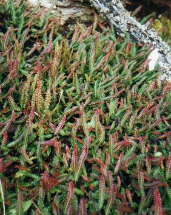
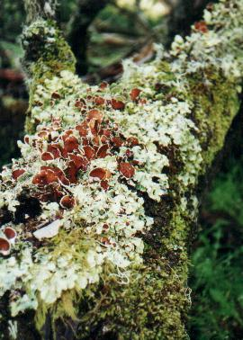
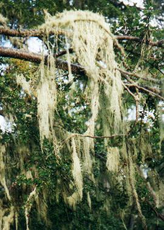
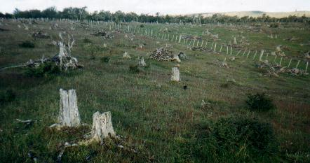
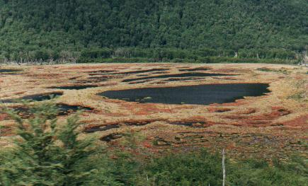
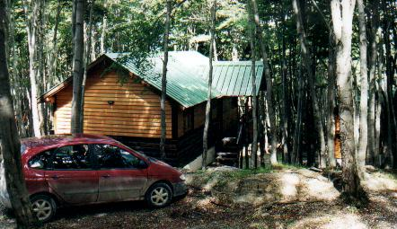

Días 8: Ida a Ushuaia (224 km.) Al día siguiente desayunamos, empacamos las valijas, cargamos el auto, y nos despedimos de la casita, de los amables dueños y del hermoso lugar.    Algunos de los recuerdos de Cabo San Pablo: Izquierda: Helechos (Blechnum penna-marina) que alfombraban el piso Centro: Troncos con coloridos líquenes Derecha: "Barba de Viejo" en los ñires  El único lugar triste: el bosque que sirvió como leña para generaciones anteriores. Pasamos una media hora en la playa, que aproveché - desafiando vientos y mucho frío - para buscar escasos caracoles. Solo encontré ejemplares pequeños entre las raíces de algas de Cachiyuyo. Finalmente decidimos partir de Cabo San Pablo y emprender el camino hasta Ushuaia. Este viaje no llevaría hasta el final de la Ruta 3, pasando por bosques de Lenga y cruzando la cordillera, que en esta parte del mundo corre de este a oeste. Nos llevó una hora llegar al pavimento. Pronto estábamos en Tolhuin, pasamos el Lago Fagnano, y nos detuvimos a comer al borde de un arroyo. Luego comenzamos el ascenso hacia el Paso Garibaldi, bordeando el Lago Escondido. Desde la cima del paso la vista del lago es única, impresionante. Desde allí, y haciendo el máxima uso del poder telescópico de nuestros binoculares, divisamos dos cóndores que planeaban por una ladera alta y distante de la montaña, revestida de nieve en los lugares que no eran pura roca.  La bajada hacia el lado sur es una sucesión de paisajes multicolores, donde el azulado de las distantes montañas contrasta con el ocre de los valles, pintados de anaranjado intenso en aquellos bajos donde se ha formado turba. Desde arriba los charcos de agua se ven negros. Las laderas exponen rocas grises, marrones y rojizas, a veces de extraordinarias formas y matices. Los bosques verdes. Las cimas nevadas de blanco. ¿Me falta algún color? Vista de las turberas encharcadas en la bajada del Paso Garibaldi ¡Sí!. Tras pasar al pie del elegante Monte Olivia e ingresar, conmocionados, a la zona urbana de Ushuaia, de repente uno se da cuenta que allí nomás está el Canal de Beagle, azul Sulfato de Cobre. Es el límite natural de este y todo viaje patagónico y, salvo que algún día visitemos la Antártida, será la costa más sureña que veremos jamás. De nuevo mirando el mapa pudimos apreciar muchos de los detalles geográficos del canal, que tiene como telón de fondo las altísimas y nevadas montañas de las islas Chilenas. Estábamos orgullosos de haber logrado tan extensa travesía, cumpliendo al pié de la letra el cronograma planeado desde Buenos Aires. Y por que habíamos llegado a la ciudad natal de mi mujer.  Pasaríamos 5 noches en un bungalow, y la primera misión ahora era cruzar la ciudad, ubicar el complejo "Aldea Nevada", e instalarnos allí. Nos pasamos de largo, pero finalmente ingresamos al predio y nos detuvimos frente a una de las casitas, en el espacio reservado para estacionar. El lugar era extraordinario, puesto que cada casita estaba escondida de las demás por un bosque tupido de Lengas que se extendía en una oscuridad impenetrable de cientos de metros. Desde aquí llamamos por celular a la persona que nos abriría la casita. Nos indicó el número de bungalow que nos correspondía. ¡Era precisamente el que estaba frente a nosotros! No tuvimos que mover el auto. Descargamos, merendamos y fuimos a comprar alimentos y recorrer la ciudad.La casita era muy cómoda, y tenía todos los enseres, incluso una hermosa salamandra a gas en el centro del comedor/dormitorio. Calefaccionaba como ninguna para erradicar el frío exterior. Afuera, el bosque de lengas era una maravilla, cubriendo todo espacio disponible, a excepción del retorcido camino de circulación interno del complejo, y las casas mismas. Llegamos precisamente en la semana de maduración de los frutos de un hongo, el Llao-llao (Cyttaria hariotti), que vive prendido a troncos y ramas de las lengas. A causa de esto, todo el camino y todas las lomas arboladas estaban salpicadas de frutos esféricos del tamaño de una pelotita de ping-pong - y no más pesados tampoco - de color anaranjado pálido. Presentaban pequeñas hendiduras en toda la superficie, pareciéndose a cráteres lunares. Caían de los arboles a casi cualquier hora del día y de la noche, haciendo un sonoro golpe en el techo metálico de la casita. La maduración duró poco, puesto que cuando partimos, 4 días más tarde, era imposible encontrar uno para fotografiar. Nos relacionamos con tres individuos que habitaban afuera de la casita:
un perro, una gata y un pajarito.
|